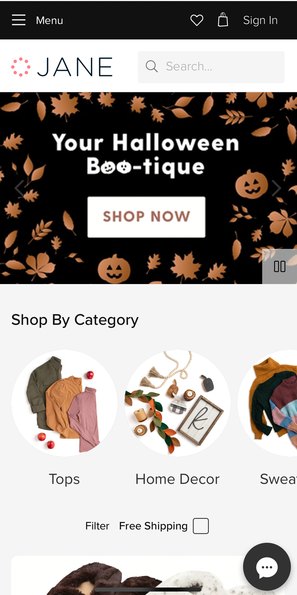

Hick's Law
Park Tool
parktool.com
Park tool’s website is an excellent example of Hicks law. The website gives you two upfront choices, fix it or tools. This help consumers to make immediate decisions on what they are wanting to do on their website.
White Space & Clean Design
Urbanized Bikes

Urbanized bikes has large pictures advertising their bikes surrounded by black. The black serves as white space making the design very clean and easily consumable. The website is empty very clean in its navigation also.
Fitt's Law
Jane
Jane is a great example of Fitt’s law because they use large button that take consumers to their desired destinations. They have a large shop now button. They also large pictures of categories of items that serve as buttons that direct consumers to what they are looking for.